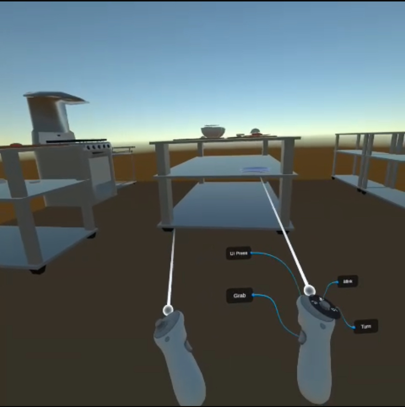
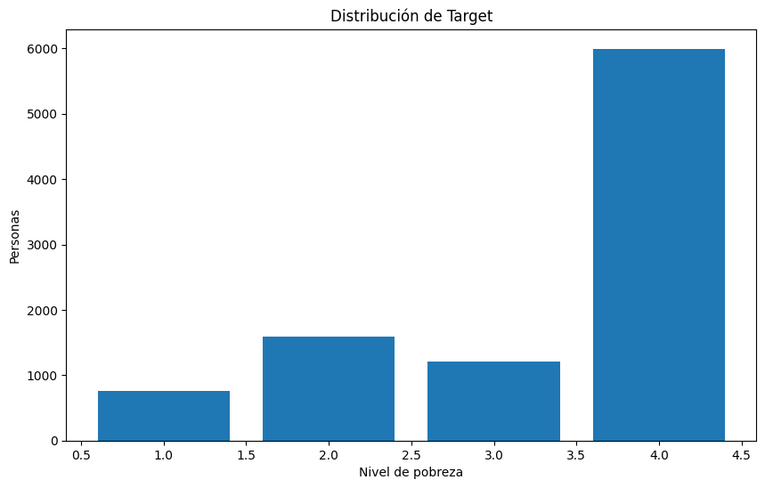

I’m a software developer with a passion for problem-solving and technology. With a strong background in computer science, I’ve worked on various projects, including building a VR Application and creating a Data Mining Project of Costa Rican Household Poverty Level Prediction. I’m currently involved in research and programming for economic experiments. My goal is to keep learning and apply my skills in AI and machine learning to create impactful solutions.
Recent Work

Created a Virtual Reality App
Developed an immersive virtual reality experience for a burger restaurant using Unity. Designed interactive elements for customer engagement, including ordering, cooking, and serving mechanics. Focused on creating a user-friendly and realistic VR environment that enhances the dining experience through gamified elements and 3D assets. Additionally, the application was used to train new employees, providing them with a hands-on, simulated experience to practice key tasks before working in the actual restaurant environment.

Data Mining
I used the Kaggle Household Poverty Level Prediction dataset to build a classification model that predicts poverty levels among households. I went through phases of business understanding, data preparation, modeling, evaluation, and deployment. I performed extensive data cleaning, feature engineering, and handled missing values to improve the dataset’s quality. I applied machine learning algorithms to classify households into different poverty levels, focusing on maximizing the model's accuracy and interpretability.